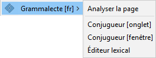

Version ${version}
Site web
Grammalecte remercie


et tous ceux qui l’ont soutenu
OPTIONS D’INTERFACE
Menu contextuel
Les commandes permettant de lancer Grammalecte sont trouvables via le menu contextuel.

Boutons d’accès
Grammalecte peut aussi afficher un bouton d’accès au menu en bas à gauche des zones de texte pour accéder aux fonctionnalités existantes.


Vous pouvez activer ou désactiver l’affichage de ces boutons sur les zones de texte. Il existe deux types de zones de texte.
Ces zones de texte sont les champs de formulaire usuels pour saisir du texte. Ils ne permettent que la saisie de texte brut, sans fioritures.
Ces zones de texte sont des sections de page web éditables. Il est fréquent que ces zones de texte apparaissent comme des “textareas” standard. Il est aussi fréquent que ces zones de texte soient couplées avec toutes sortes de logiciels (de simples scripts d’aide à la mise en page ou des applications complexes). Ces zones de texte permettent l’affichage de texte enrichi (italique, gras, hyperlien, images, etc.).
Raccourcis clavier
CTRL+MAJ+6
Correcteur grammatical
CTRL+MAJ+7
Conjugueur
CTRL+MAJ+8
Éditeur lexical
OPTIONS GRAMMATICALES
OPTIONS ORTHOGRAPHIQUES
DICTIONNAIRES DE GRAMMALECTE
Environ 83 000 entrées, 500 000 flexions.
Ni éditable, ni désactivable.
Ce dictionnaire est créé à partir du dictionnaire orthographique pour Firefox et LibreOffice, conçu sur le site de Grammalecte.
Ce dictionnaire est composé à partir de dictionnaires communautaires disponibles en ligne aux membres.
Non disponible. Fonctionnalité à venir.
Ce dictionnaire est créé et édité via l’éditeur lexical et n’est pas partagé.
ZONE DE TEST
Section de contrôle pour le développement du logiciel…
Page de test
INFORMATIONS
Licence d’utilisation
Grammalecte est un correcteur grammatical open source sous licence GPL 3.
Respect de la vie privée
Grammalecte ne modifie aucun réglage de votre navigateur, ne vous espionne pas et ne communique aucune information de quelque sorte à quiconque, pas même à l’auteur du logiciel.
Droits demandés par l’extension à votre navigateur
“Accéder à vos données pour tous les sites web” (Firefox)
Il est nécessaire de pouvoir lire ce que contient une page web pour proposer la correction grammaticale. Ceci ne se fait qu’à la demande de l’utilisateur.
Contrairement à tous les autres correcteurs grammaticaux, tout se fait en mode hors-ligne. Aucune information n’est transmise.
“Télécharger des fichiers et consulter et modifier l’historique des téléchargements” (Firefox)
Grammalecte requiert les droits de l’interface “downloads” pour pouvoir exporter votre dictionnaire personnel sur le disque dur (par une astuce de programmation).
Mais l’extension ne télécharge rien et ne consulte ni ne modifie votre historique de téléchargement.
Revue de code
Le code de l’extension est passé en revue par les équipes de Mozilla et de Google.
Développement et tests
Cette extension est développée et testée avec Firefox. Il se peut qu’il y ait des différences de comportement avec Chrome et les autres navigateurs avec lesquels cette extension est compatible.